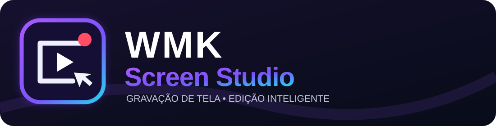

Fundação WMK
Identidade, tradução, documentação e estabilidade antes de ampliar o editor.

Roadmap público · atualizado em 13/11/2026Versões propostas e tarefas auditáveis para um editor de gravação de tela gratuito, aberto e útil em computadores modestos. Este roadmap não é promessa de prazo.
Abrir checklist técnico: cenas, fontes, transmissões e IA (51 tarefas)
Identidade, tradução, documentação e estabilidade antes de ampliar o editor.
Layouts livres, presets, galeria de projetos e ferramentas para tutoriais.
Transcrição, roteiros, revisão e provedores locais/externos com privacidade.
Capturas por etapas e geração de manuais HTML com revisão humana.
PDF, pacotes de curso, API documentada e extensibilidade.
Filtros funcionam apenas no navegador. O estado oficial é este arquivo versionado no GitHub — não há sincronização automática com Issues ou Actions.
Critério de aceite: Instalador MSI/EXE de execução concluída; download e abertura no Windows; log de falhas documentado.
Critério de aceite: productName e ícones Tauri trocados; título, bandeja e instaladores com marca WMK; testes Windows.
Critério de aceite: Cores consistentes e telas principais traduzidas sem textos cortados.
Critério de aceite: Tela+microfone+áudio do sistema; cliques; zoom; MP4/WebM/GIF; casos sem GPU aceleradora.
Critério de aceite: Guias de instalação, primeiro contato, diagnóstico e licença; navegação entre documentos.
Critério de aceite: README e public/wmk-screen-studio-logo.svg publicados no GitHub.
Critério de aceite: Arrastar, ocultar, restaurar, salvar layout JSON; testes com tela 1366×768.
Critério de aceite: Galeria com criar, abrir, renomear, duplicar, arquivar; confirmação antes de excluir.
Critério de aceite: Atalhos exibidos e sincronizados; bloqueio de senhas e entradas confidenciais.
Critério de aceite: Perfis de 720p/1080p, FPS e encoder; uso de CPU/RAM mostrado; teste PC modesto.
Critério de aceite: Transcrever localmente; revisar e exportar SRT/VTT; status e logs.
Critério de aceite: Configurar endpoint/chave, teste de conexão, limites e contagem de custos; nada enviado sem opt-in.
Critério de aceite: Gerar sugestões editáveis; marcar incertezas; não modificar projeto automaticamente.
Critério de aceite: Associar cliques a quadros; editar sequência; exportar imagens anotadas.
Critério de aceite: HTML offline com sumário, passos e imagens; dados editáveis; acessibilidade básica.
Critério de aceite: Produzir manual PDF opcional e pacote ZIP com recursos, roteiro e vídeo.
Critério de aceite: API/versionamento dos projetos, permissões, pontos de extensão, exemplos e testes.
Falhas, compilação, integridade de arquivos, privacidade, gravação e exportação. Bloqueia release.
Usabilidade, tradução, layouts livres, desempenho e ferramentas básicas de tutorial.
IA opcional e geração de material didático, sem prejudicar o funcionamento offline.
Plugins, automações e formatos adicionais, após estabilizar recursos principais.
| Camada | Abordagem | Segurança e custo |
|---|---|---|
| Transcrição | whisper.cpp local, com exportação SRT/VTT | Áudio permanece local no modo offline |
| LLM local | Ollama acessado em localhost via adaptador controlado | Sem upload; limitar tokens, timeout e uso de hardware |
| LLM externo | Groq ou outro provedor configurado pelo usuário | Consentimento antes de enviar conteúdo; chave em armazenamento seguro; custos exibidos |
| Exportação | HTML, JSON de projeto e futuramente PDF | Pré-visualização/editabilidade; redigir dados sensíveis |
Este é um projeto aberto para propostas, correções, documentação e testes. Antes de codificar, descreva o problema, passos para reproduzir, sistema operacional e resultado esperado. Contribuições devem preservar os créditos do Capptivo e respeitar licenças de terceiros.
Repositório · Pull Requests · GitHub Actions
A disponibilidade de Issues depende das configurações do repositório. Se estiver desativada, utilize Pull Requests ou canais de contato documentados.
O código principal herdado do Capptivo utiliza licença MIT, que permite modificação, distribuição e uso comercial mediante manutenção dos avisos. FFmpeg/ffprobe embarcados, fontes e bibliotecas terceiras possuem licenças próprias, como descrito em THIRD_PARTY_NOTICES.md. Não há assinatura paga planejada para os recursos centrais WMK; APIs de IA de terceiros podem cobrar separadamente e serão opcionais.